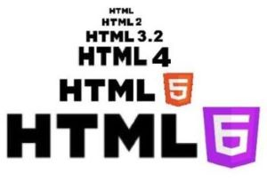

La historia de HTML

HTML, siglas de HyperText Markup Language.
Es el lenguaje de marcado estándar para la creación de páginas web.
Utiliza etiquetas para estructurar el contenido de una página, como encabezados, párrafos e imágenes.
La historia de HTML se remonta en la década de 1980 y 1990,
cuando Tim Berners-Lee propuso un sistema de gestión de la información
para ayudar a los científicos a compartir documentos y enlaces entre ellos
Este sistema se convirtió en la base de la World Wide Web.
En 1991, Berners-Lee creó HTML como un lenguaje de marcado
para describir la estructura de los documentos en la web.

HTML ha experimentado diversas versiones clave:
HTML 1.0 (1993):
La primera versión propuesta por Tim Berners-Lee.HTML 2.0 (1995):
Publicada por el IETF, incluía formularios y tablas.HTML 3.2 (1997):
Introdujo soporte para applets y scripts.HTML 4.01 (1999):
Marcó la transición hacia estándares más estrictos.XHTML 1.0 (2000):
Una versión más estricta y basada en XML de HTMLHTML 5 (2014):
La versión más reciente, con mejoras significativas en multimedia, gráficos y funcionalidades interactivas.
Creador:
HTML fue creado por Tim Berners-Lee, un científico de la computación británico,
mientras trabajaba en el CERN (Organización Europea para la investigación Nuclear).
Su visión y contribuciones han sido fundamentales para el desarrollo y evolución de HTML